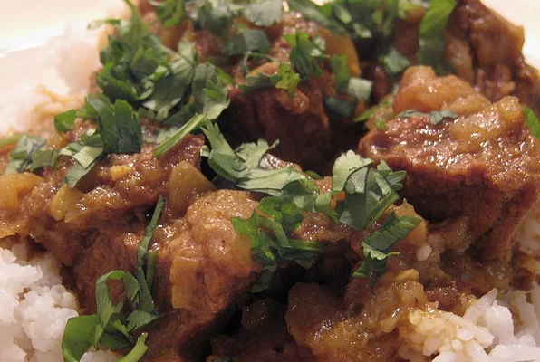

Search
Use the searchbox below to find recipes (todo implement JavaScript search)

Bengali Beef Curry
This spicy beef curry is best served with plain basmati rice or eaten with naan or pita bread.
Bengali Dhal
This bengali dhal is made with lentils and a variety of spices and is best served with basmati rice.

Gulab Jamun
These are like little waffle balls that sit in and absorb a sugary rosewater syrup.